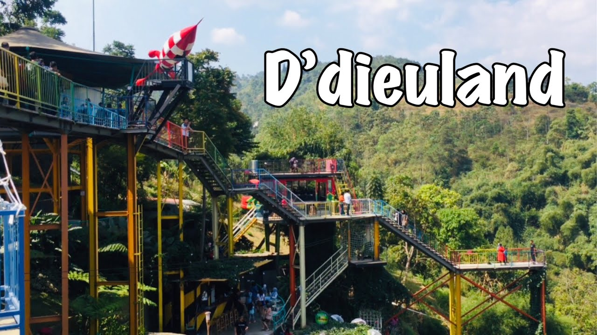

Sejarah
 Gedung Sate
Gedung Sate
Kota Bandung berasal dari kata bendung atau bendungan karena terbendungnya sungai Citarum oleh lava Gunung Tangkuban Perahu yang lalu membentuk telaga. Legenda yang diceritakan oleh orang-orang tua di Bandung mengatakan bahwa nama Bandung diambil dari sebuah kendaraan air yang terdiri dari dua perahu yang diikat berdampingan yang disebut perahu bandung yang digunakan oleh Bupati Bandung. R.A. WIRANATAKUSUMA II, untuk melayari Ci Tarum dalam mencari tempat kedudukan kabupaten yang baruuntuk menggantikan Ibu Kota yang lama di Dayeuhkolot.
Berdasarkan filosofi Sunda, kata Bandung berdasar dari Kalimat Nga-Bandung Banda Indung, yang merupakan kalimat sakral luhur karena mengandung nilai ajaran Sunda. Nga-Bandung-an artinya menyaksikan atau bersaksi. Banda adalah segala Sesuatu yang berada di alam hidup yaitu di bumi dan atmosfer, baik makhluk hidup maupun benda mati. Sinonim dari banda adalah hart. Indung berarti Ibu Pertiwi tempat Banda berada.
Klik untuk mendapatkan informasi lebih lengkap tentang Sejarah Bandung
Geografis
 Geografis
Geografis
Kota Bandung dikelilingi oleh pegunungan, sehingga bentuk morfologi wilayahnya bagaikan sebuah mangkok raksasa, secara geografis kota ini terletak di tengah-tengah provinsi Jawa Barat, serta berada pada ketinggian ±768mdi atas permukaan laut, dengan titik tertinggi di berada di sebelah utara dengan ketinggian 1.050 meter di atas permukaan laut dan sebelah selatan merupakan kawasan rendah dengan ketinggian 675 meter di atas permukaan laut. Sejak dibukanya Jalan Tol Cipularang, kota Bandung telah menjadi tujuan utama dalam menikmati liburan akhir pekan terutama dari masyarakat yang berasal dari Jakarta sekitarnya. Selain menjadi kota wisata belanja, kota Bandung juga dikenal dengan sejumlah besar bangunan lama berasitektur peninggalan Belanda.
Klik untuk mendapatkan informasi lebih lengkap tentang Geografis
Wisata

D’Dieuland Bandung
Kota Bandung telah menjadi tujuan utama dalam menikmati liburan akhir pekan terutama dari masyarakat yang berasal dari Jakarta sekitarnya. D’dieuland adalah salah satu tempat wisata sekaligus cafe yang ada di Punclut, Bandung Barat, sehingga seringkali disebut juga dengan nama D’dieuland Punclut. Tempat ini awalnya dinamakan dalam bahasa Indonesia nya yakni di sini Land, namun karena sekilas menyerupai Disney Land izin pun tidak bisa keluar. Akhirnya diputuskanlah namanya menjadi Di Dieu Land atau D’dieuland. Salah satu ikon yang ada di D’dieuland adalah jembatan bernama Sky Walk yang berwarna warni.
Klik untuk mendapatkan informasi lebih lengkap tentang Wisata di Bandung